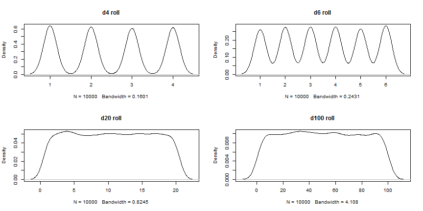

D&D dice roll
Ivan Barilar
PhD Student
Why?
- Met some friends for a D&D session?
- To your dismay you have no dice at hand?
- Tired of half of your dice ending up on the floor after each roll?
- To not dispare, just use the D&D dice roll tool!
Advantages of the D&D dice roll tool
- No need to carry dice around all the time.
- Cant be accused of cheating or having loaded dice.
- Rolling a dosen of dice with just one click.
Variety of options
- roll up to 10 dice from d4 to d100
- use a fair random draw algorithm

Conclusion
- D&D dice roll is easy to use.
- Days of borrowing dices and looking under tables are long gone.
- With all the other useless apps out there why not add another one.